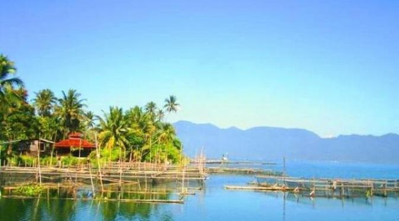

Jam Gadang
Jam Gadang merupakan ikon Kota Bukittinggi, Sumatera Barat, yang dibangun pada tahun 1926 sebagai hadiah dari Ratu Belanda Wilhelmina kepada sekretaris kota Fort de Kock (nama lama Bukittinggi). Menara ini memiliki tinggi sekitar 26 meter dan dirancang oleh arsitek lokal bernama Yazid Rajo Mangkuto. Mesin jamnya dibuat oleh pabrik Vortmann di Recklinghausen, Jerman, dan sama dengan mesin yang digunakan pada Big Ben di London, menjadikannya sangat istimewa karena hanya dua yang dibuat di dunia. Salah satu ciri khas dari jam ini adalah penggunaan angka Romawi “IIII” untuk angka empat, bukan “IV” sebagaimana biasanya. Struktur bangunannya pun unik karena dibangun tanpa semen dan besi, melainkan menggunakan campuran kapur, pasir, dan putih telur, serta teknik sambungan kayu tradisional Minangkabau.
Baca SelengkapnyaDanau Maninjau
Danau Maninjau adalah sebuah danau kaldera yang terletak di Kabupaten Agam, Sumatera Barat, sekitar 140 km dari Kota Padang dan sekitar 35 km dari Kota Bukittinggi. Danau ini terbentuk akibat letusan gunung berapi purba ribuan tahun yang lalu, sehingga menghasilkan cekungan besar yang kini menjadi danau dengan luas sekitar 99,5 km² dan kedalaman maksimum mencapai 495 meter. Dikelilingi perbukitan hijau dan sawah yang berundak-undak, Danau Maninjau menawarkan panorama alam yang luar biasa indah, terutama saat matahari terbit dan terbenam. Udara di sekitarnya sejuk dan segar, menjadikannya tempat ideal untuk relaksasi maupun wisata alam.
Baca SelengkapnyaIstana Pagaruyung
Istana Basa Pagaruyung adalah replika megah dari istana Kerajaan Pagaruyung yang terletak di Tanjung Emas, Batusangkar, Kabupaten Tanah Datar, Sumatera Barat. Istana ini dibangun mengikuti gaya arsitektur tradisional Minangkabau, yaitu Rumah Gadang, dengan atap khas berbentuk gonjong yang menyerupai tanduk kerbau. Bangunannya terdiri dari tiga lantai dan ditopang oleh 72 tiang, sebagian di antaranya sengaja dibuat miring agar tahan terhadap gempa dan angin. Dinding-dindingnya dipenuhi ukiran khas Minangkabau yang memiliki makna filosofis mendalam, seperti nilai kehidupan, pepatah adat, serta unsur alam dan budaya. Lantai pertama digunakan sebagai ruang penerimaan tamu dan kegiatan adat, lantai kedua sebagai tempat tinggal keluarga kerajaan dan pelantikan pemimpin, sedangkan lantai ketiga berfungsi sebagai ruang penyimpanan pusaka dan tempat bermeditasi.
Baca SelengkapnyaPantai Air Manis
Pantai Air Manis, yang dalam bahasa Minang disebut Aia Manih, terletak di Kelurahan Air Manis, Kecamatan Padang Selatan, sekitar 10 kilometer dari pusat Kota Padang, Sumatera Barat. Pantai ini terkenal dengan pasirnya yang cokelat keputihan, ombak yang tenang, dan daratan yang landai, menjadikannya cocok untuk berenang, bermain, atau sekadar bersantai di tepi pantai. Daya tarik utama pantai ini adalah Batu Malin Kundang, sebuah batu yang dipercaya merupakan sosok Malin Kundang yang dikutuk menjadi batu karena durhaka kepada ibunya. Legenda ini begitu melekat di masyarakat dan menjadi magnet tersendiri bagi para wisatawan, terutama saat musim liburan dan Lebaran. Selain itu, panorama pantai yang indah dengan latar Gunung Padang serta keberadaan dua pulau kecil—Pisang Ketek dan Pisang Gadang—menambah pesona alami yang menenangkan.
Baca SelengkapnyaDanau Singkarak
Danau Singkarak adalah danau terbesar di Sumatera Barat dan kedua terbesar di Pulau Sumatera setelah Danau Toba. Terletak di antara dua kabupaten, yaitu Solok dan Tanah Datar, danau ini membentang sepanjang sekitar 21 kilometer dengan luas mencapai lebih dari 107 km². Danau ini terbentuk secara alami akibat aktivitas tektonik dan berada di lembah antara dua pegunungan, sehingga menawarkan pemandangan alam yang sangat memukau. Airnya yang jernih dan tenang, serta dikelilingi perbukitan hijau, menjadikan Danau Singkarak sebagai tempat favorit untuk melepas penat, menikmati ketenangan, serta berburu foto-foto alam yang indah. Salah satu keunikan dari danau ini adalah keberadaan ikan endemik bernama ikan bilih, yang hanya bisa hidup di Danau Singkarak dan tidak dapat dibudidayakan di tempat lain.
Baca Selengkapnya